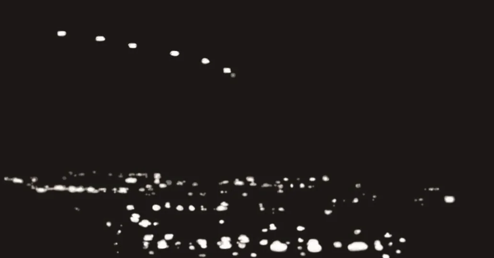

Les lumières de Phoenix, apparues dans le ciel nocturne à Phoenix (Arizona) le , ont été perçues par plusieurs spectateurs comme le bord d'attaque d'un grand engin volant en forme de V, qui les a survolés à la verticale. Les témoins ont décrit la partie non éclairée de cet ovni comme masquant les étoiles au-dessus de lui à son passage, lent et silencieux. Ces témoins étaient pour la plupart dignes de confiance et ne souffraient d'aucun délire ; ils ne souffraient pas non plus de paralysie du sommeil ni d'aucune autre perturbation psychologique temporaire de leurs capacités cognitives ou perceptives. Pourtant, les vidéos prises des lumières les montrent apparaissant une à une, planant près de l'horizon ouest en une ligne irrégulière, puis s'éteignant une par une. Les recherches menées par la psychologue Elizabeth Loftus, ainsi que par Christopher Chabris et Daniel Simmons, entre autres, démontrent la subjectivité de la perception comme de la mémoire. Les expériences partagées d'un événement inhabituel se transforment souvent en un récit dramatique cohérent. Bien que l'United States Air Force ait admis que les lumières étaient des fusées éclairantes militaires larguées sous parachute, et malgré les vidéos prises en qui l'infirment, la croyance que les lumières de Phoenix étaient le bord d'attaque d'un immense ovni reste forte 25 ans après l'incident.
Le soir du , de nombreux témoins du sud du Nevada et de Phoenix (Arizona) ou de ses environs ont rapporté avoir vu un immense engin en forme de V les survoler lentement et silencieusement. Cinq lumières, l'une à la pointe du V et deux autres sur le bord d'attaque de chaque aile, signalaient l'engin. Cette observation d'ovni est connue sous le nom de lumières de Phoenix. La première observation des lumières de Phoenix eut lieu à Henderson (Nevada), un peu au sud-est de Las Vegas (Nevada). C'était le , heure normale des Rocheuses. Le témoin de Henderson rapporta avoir vu un objet en forme de V, à peu près de la taille d'un avion de ligne 747. Il avait six lumières sur son bord d'attaque et produisait un son de vent qui souffle. Il se déplaçait du nord-ouest vers le sud-est. L'observation suivante fut celle d'un ancien policier non identifié à Paulden (Arizona) vers . Il rapporta avoir vu un groupe de lumières rougeâtres ou orangées, quatre lumières ensemble et une cinquième à la traîne. Aux jumelles, il pouvait voir que chaque lumière était composée de deux sources lumineuses ponctuelles. Les lumières finirent par disparaître sur l'horizon sud. À , des habitants de Prescott Valley (Arizona) commencèrent à appeler pour signaler un objet qu'ils disaient solide, parce qu'il masquait les étoiles à son passage. L'un de ces témoins était John Kaiser, qui se trouvait dehors avec sa femme et ses fils. Il dit que les lumières formaient un motif triangulaire. La lumière de tête était blanche, les autres rouges. Il dit qu'elles passèrent juste au-dessus d'eux, virèrent sur la droite, puis disparurent vers le sud-est. Si les observateurs de Prescott Valley ne purent déterminer leur altitude, celle-ci était basse. Le prétendu engin ne faisait aucun bruit. Un autre observateur de la région de Prescott (Arizona) vit lui aussi une ligne de lumières en V, dont les trois premières étaient groupées à la pointe du V, tandis que deux autres se trouvaient plus en arrière Margaritoff, Marco: The Full Story of the Phoenix Lights, UFO that Shook the Southwest, .
Parmi ceux qui virent les lumières au-dessus de Prescott Valley se trouvait Tim Ley. Avec sa femme Bobbi, son fils Hal et son petit-fils Damien Turnidge, il les vit d'abord comme cinq lumières disposées en arc. Ils comprirent vite que les lumières se dirigeaient vers eux. Ce faisant, au cours des dix minutes suivantes, les lumières prirent la forme d'un V semblable à une équerre de charpentier, ou aux deux côtés d'un triangle équilatéral. Comme d'autres témoins, ils rapportèrent un objet immense, discernable non seulement par cinq lumières sur son bord d'attaque, mais aussi parce qu'il masquait les étoiles du ciel nocturne en passant juste au-dessus des observateurs. Bientôt, l'objet sembla descendre tout droit la rue où ils habitaient, à environ 100 à 150 pieds (30 à 46 mètres) au-dessus d'eux, se déplaçant si lentement qu'il semblait planer, et sans un bruit Ley, Tim: UFO Witness Tim Ley TV Interview – June 13, 1997.[Note de RR0] La famille Ley a observé les lumières depuis sa maison du nord de Phoenix, à une centaine de kilomètres au sud-est de Prescott Valley, après que les lumières eurent survolé la région de Prescott .
Une histoire bien différente de la plupart fut racontée par l'astronome amateur Mitch Stanley, qui habitait Scottsdale (Arizona), une banlieue de Phoenix. Après avoir regardé les lumières dans son télescope, il dit à sa mère, présente à ce moment-là, que les lumières étaient des avions. Selon le journaliste Tony Ortega, le témoignage de Stanley tomba dans l'oreille d'un sourd. Ceux qui voulaient faire mousser l'histoire ne s'intéressaient pas à son explication plutôt banale Ortega, Tony: The Phoenix Lights Explained (Again), eSkeptic, :
Après son observation, Stanley tenta de contacter une conseillère municipale de Phoenix qui faisait du bruit autour de l'événement, ainsi que deux charlatans de l'ovni qui sévissaient sur la scène locale, mais il fut éconduit.
Curieusement, bien que de nombreuses personnes aient appelé diverses autorités au sujet de cette étrange apparition et qu'il y ait au moins trois bases de l'armée de l'air dans la région de Phoenix, aucun chasseur ne décolla pour intercepter cet ovni. Ces bases sont la base aérienne de Davis-Monthan, à 4,3 milles (6,9 km) au sud-est de Tucson (Arizona), donc à environ 100 milles (161 km) de Phoenix ; la base aérienne de Luke, à environ 15 milles (24 km) à l'ouest de Phoenix ; et la réserve militaire de Papago Park de la Air National Guard, à la périphérie même de Phoenix. Alors, comment se fait-il que l'United States Air Force n'ait réagi à aucun de ces signalements, et comment un astronome amateur a-t-il pu rapporter un événement tout à fait différent ?
Heureusement, outre le témoignage de
nombreux témoins, nous disposons de vidéos prises lors de l'incident de . Elles
montrent une série de lumières apparaissant dans le ciel une à une, puis s'éteignant une par une. Dans l'une des
vidéos, l'homme qui filme s'exclame : En voilà une autre qui vient d'apparaître !
Dans cette vidéo, les trois premières lumières forment une ligne, puis une quatrième apparaît dans
une position qui forme un angle. Dans une autre vidéo, celle-ci sans son, une lumière apparaît, puis une autre, puis
d'autres encore, jusqu'à cinq, puis six lumières. Elles forment d'abord un « v » évasé, puis une ligne plus ou moins
droite (voir figure 1). Puis les lumières s'éteignent une par une. Aucune des vidéos ne montre un objet solide en forme
de V masquant les étoiles en passant au-dessus des têtes. En fait, dans la plupart d'entre elles, les lumières
planent simplement, au lieu de se déplacer dans une direction discernable.Toutes les vidéos
originales de ne peuvent plus être consultées actuellement, mais elles ont été
remplacées par d'autres versions disponibles en ligne. “Phoenix Lights” Videos. Les vidéos
originales de (www.dailymotion.com/video/x923j-phoenix-lights-1997 ;
www.ufospy.com/phoenix-lights-original-ufo-footage/) ne sont plus disponibles en ligne, et les vidéos qui le sont
sont de brefs plans, lourdement montés, dans des reportages quelque peu sensationnalistes réalisés 20 ans après
l'incident. Notamment, aucune ne ressemble en quoi que ce soit à un engin en forme de V survolant lentement la
ville de Phoenix. Ainsi, comme c'est si souvent le cas, la prétendue preuve stupéfiante d'une observation d'ovni se
révèle vague et peu impressionnante à l'examen.[Note de RR0] Les vidéos décrites
ici montrent les lumières vues vers , que l'armée de l'air a
attribuées à des fusées éclairantes. La formation en V signalée depuis Henderson, Paulden, Prescott Valley et par la
famille Ley, et vue comme des avions par Mitch Stanley, a été observée environ deux heures plus tôt, entre , et a été attribuée à une formation d'avions plutôt qu'à des
fusées éclairantes .

Ces vidéos confirment l'explication du département de la Défense, selon laquelle les lumières étaient des fusées éclairantes militaires larguées lors d'une mission d'entraînement Patton, Phil, Coburn, Davin, McCarthy, Erin, Pappalardo, Joe & Sofge, Erik: Military Flares are Behind Some UFO Sightings, :
L'armée de l'air affirma d'abord qu'aucun avion militaire ne se trouvait dans la zone. Deux mois plus tard, des responsables de la base aérienne de Davis-Monthan, près de Tucson, invoquèrent une erreur dans un registre et confirmèrent que des pilotes d'A-10 de la Air National Guard du Maryland, achevant un exercice d'entraînement, avaient largué des fusées éclairantes restantes près de Phoenix avant de rentrer à leur base.
L'un de nos gars en avait une dizaine de reste, déclara le lieutenant-colonel Ed Jones à l'Arizona Republic,alors il a commencé à les recracher, l'une après l'autre.
Ces fusées éclairantes militaires sont larguées sous parachute et planent donc assez longtemps au-dessus des champs de bataille qu'elles éclairent. C'est pourquoi elles sont apparues soudainement dans le ciel à l'ouest de Phoenix et ont semblé s'éteindre en descendant lentement derrière la chaîne des monts Estrella, au sud-ouest de la ville.
Étant donné que les vidéos montrent les lumières apparaissant une à une et planant en une ligne irrégulière, bas dans le ciel ouest, comment tant de témoins ont-ils pu les percevoir comme un engin en forme de V volant lentement et silencieusement presque juste au-dessus d'eux ? Il semblerait qu'une bonne partie de ce que les témoins ont vu résulte de ce que les centres perceptifs de leur cerveau ont automatiquement comblé les espaces entre les lumières pour créer un objet entier.
Il semble néanmoins incompréhensible au premier abord que des témoins oculaires aient pu observer une ligne
irrégulière de lumières, apparaissant une à une et disparaissant une à une, bas dans le ciel ouest, et pourtant les
percevoir comme un engin en forme de V portant les lumières sur le bord d'attaque de ses ailes, un engin dont la
silhouette masquait les étoiles au-dessus de lui alors qu'il passait juste au-dessus des observateurs. La perception et la mémoire peuvent-elles être à ce point
défaillantes ? La plupart d'entre nous, semble-t-il, croient à tort que les perceptions et les souvenirs fonctionnent
un peu comme un magnétophone, nous donnant un enregistrement plus ou moins objectif des événements dont nous sommes
témoins ou auxquels nous participons. Dans une conférence TED de , Elizabeth Loftus, psychologue
cognitiviste et experte de la mémoire humaine, a décrit en détail à quel point la mémoire et la perception sont en
réalité faillibles Loftus, Elizabeth: How
reliable is your memory?, . La docteure Loftus a
commencé son exposé par la tragique histoire de Steve Titus. Il passait une soirée
romantique avec sa fiancée lorsqu'il fut arrêté par la police. Il s'avéra que sa voiture ressemblait à celle d'un homme
qui avait violé une auto-stoppeuse. Titus ressemblait aussi un peu à cet homme. Lorsque la victime du viol examina une
série de photos d'identification, elle dit de celle de Titus : C'est lui le plus ressemblant
. Titus fut jugé et
la victime témoigna contre lui, déclarant : Je suis absolument certaine que c'est cet homme.
Titus fut condamné
mais se battit, contactant un journaliste d'investigation qui retrouva le vrai violeur. Cet homme non seulement avoua le
viol, mais on découvrit qu'il en avait commis plusieurs autres. Titus fut disculpé et libéré. Mais il avait perdu son
emploi, les économies de toute sa vie et sa relation avec sa fiancée. Aigri par ses malheurs, il poursuivit la police
en justice. Cependant, quelques jours seulement avant l'ouverture de son procès, il fut victime d'une crise cardiaque
liée au stress et mourut à l'âge de 35 ans.
Loftus raconta ensuite que 300 innocents, condamnés sur la base de témoignages erronés, ont été libérés grâce à des
preuves ADN. Beaucoup d'entre eux avaient été emprisonnés entre 10 et 30 ans. Loftus souligna en outre que les
souvenirs peuvent être altérés subjectivement par la manière dont on interroge les témoins. Dans une expérience, deux
groupes de personnes virent la même collision automobile mise en scène. On demanda au premier groupe : À quelle
vitesse allaient les voitures quand elles se sont heurtées ?
On demanda à l'autre groupe : À quelle vitesse
allaient les voitures quand elles se sont fracassées l'une contre l'autre ?
Le second groupe, à qui l'on avait
donné la description plus viscérale de se fracasser
, estima la vitesse des voitures nettement plus élevée que le
premier groupe, et déclara aussi avoir vu du verre brisé dans la rue après la collision, alors qu'il n'y en avait
pas.
Dans une autre expérience sur la perception visuelle, les chercheurs Christopher Chabris
et Daniel Simmons[Note de RR0] Le coauteur de
cette expérience est Daniel J. Simons, et non Simmons Simons, Daniel J. & Chabris, Christopher
F.: Gorillas in our midst: sustained inattentional
blindness for dynamic events, Perception, vol. 28, n° 9, pp. 1059-1074, . ont créé une vidéo dans laquelle deux équipes, l'une en
maillots blancs, l'autre en maillots noirs, se passent des ballons de basket entre membres de leur propre équipe. On
demande aux spectateurs de la vidéo de compter le nombre de passes que se font les membres de l'équipe en maillots
blancs. À leur insu, la vidéo réserve une surprise. Pendant qu'ils sont occupés à compter les passes de l'équipe en
blanc, une personne en costume de gorille entre dans la scène, se tourne face à la caméra, se frappe la poitrine, puis
sort du champ. La plupart des spectateurs ne voient pas la personne en costume de gorille. On montre ensuite la vidéo
une seconde fois au public. Cette fois, un titre s'affiche à l'écran : Incident du gorille, second regard
. Désormais, tous les spectateurs voient le gorille traverser la scène.Voir les documentaires sur le « gorille invisible » en ligne. “Invisible gorilla” sources online: https://www.youtube.com/watch?v=IGQmdoK_ZfY Campese, Liz: Inattentional Blindness: What We Van Learn from the Invisible Gorilla Experiment?, Pourquoi ceux qui voient la personne en costume de gorille
lors de la seconde projection de la vidéo la manquent-ils la première fois ? Ce qui est à l'œuvre ici s'appelle la
« cécité d'inattention ». Comme les spectateurs ont reçu la consigne de se concentrer sur l'équipe en maillots blancs,
ils éliminent inconsciemment ceux en noir, y compris la personne vêtue du costume de gorille noir. Le titre Incident du gorille, second regard
les invite à chercher le gorille, de même que la consigne initiale de se
concentrer sur l'équipe en maillots blancs avait détourné leur attention de celui-ci.
Ainsi, sous l'effet de certains indices, les témoins verront ce qui n'est pas là (du verre brisé dans la rue, quand
l'accident de circulation mis en scène est décrit comme des voitures qui se fracassent
l'une contre l'autre) et
ne verront pas ce qui est là (une personne en costume de gorille traversant une scène). Nos sensations sont organisées
en perceptions par les centres perceptifs du cerveau, les perceptions visuelles
étant organisées par le lobe occipital. Considérez que nous recevons en fait deux ensembles de sensations visuelles,
un de chaque œil. Chacune de ces images devrait aussi comporter un trou, créé par la tache aveugle à l'endroit où le
nerf optique de chaque œil se raccorde à la rétine. La tache aveugle est efficacement compensée par le fait que nos
yeux ne sont pas immobiles, mais regardent en fait vers le haut et le bas, la gauche et la droite. De plus, nos yeux
font sans cesse la mise au point sur la scène que nous regardons, tantôt sur le premier plan, tantôt sur des zones
plus éloignées. Nous ne voyons pourtant pas deux images avec des taches aveugles, et nous n'avons généralement pas
conscience que nos yeux se tournent dans diverses directions ; nous ne voyons pas non plus les images changer au gré
des changements de mise au point. Si nous voyons une seule image en trois dimensions plutôt que deux, une seule image
sans taches aveugles, une image dont la profondeur de champ dépasse celle de la plupart des appareils photo, c'est que
ces données sont organisées par le lobe occipital de notre cerveau.
L'expérience citée par Loftus et la vidéo mise en scène par Chabris et Simmons démontrent aussi que ces perceptions
peuvent être déformées par des consignes, de la désinformation, l'émotivité et les expériences partagées. Lorsque des
personnes partagent leurs perceptions, souvent erronées, d'un événement inhabituel, ce partage conduit à organiser
leurs perceptions en un récit dramatique. Ceux qui ont vu les lumières de Phoenix ont vu quelque chose d'assez
incompréhensible dans le ciel au-dessus de leur ville, ou du moins près d'elle. Tim Ley et sa famille ont partagé
leurs perceptions de ce que chacun avait vu dans le ciel nocturne. Il est à noter que M. Ley a été interviewé en plein
jour le , trois mois après l'apparition des lumières de Phoenix dans le ciel nocturne. Ce dont
il a été témoin, partagé entre lui et les membres de sa famille, a donc été inconsciemment affiné pendant trois mois
en un récit structuré. Plus que tout, l'observation des lumières de Phoenix démontre la faillibilité du témoignage oculaire comme de la mémoire humaine.
Elle illustre aussi la nature narrative et avide de formes reconnaissables tant de nos centres de la cognition que
de nos perceptions. Il faut souligner que les lumières ont été vues sur de vastes zones par de nombreuses personnes,
toutes des témoins dignes de foi. La plupart de ces témoins, semble-t-il, n'étaient pas sujets à une pensée
délirante, et n'imposaient pas non plus une idée préconçue à ce qu'ils voyaient. Ces témoins n'étaient pas, pour la
plupart, des passionnés d'ovnis ; ils ne subissaient pas non plus les effets de la paralysie du sommeil et de l'état
hypnagogique, comme c'est souvent le cas de ceux qui croient avoir été enlevés par des extraterrestres. De plus, ils ont
réellement vu quelque chose d'inhabituel dans le ciel de la pointe sud du Nevada et du sud-ouest de l'Arizona, en particulier à Phoenix. La persistance de ce récit partagé mérite
aussi d'être notée. Les vidéos montrant une ligne irrégulière de lumières s'allumant et s'éteignant une à une, jointes
à l'aveu de l'armée de l'air qu'il s'agissait de fusées éclairantes militaires larguées sous parachute, ont-elles
dissipé le mythe d'un grand engin en forme de V survolant lentement et silencieusement la ville de Phoenix, masquant
quelques étoiles lors de son étrange passage ? Non. Dans un journal télévisé local diffusé sur Fox 10 Phoenix pour le
24e anniversaire de l'incident de , le présentateur dit des lumières
de Phoenix : , , , et à ce jour, il n'y a aucun moyen de savoir avec certitude ce qu'elles étaient, d'où elles
venaient ni où elles sont allées.
Voir le documentaire « Phoenix Lights
Anniversary » en ligne. Phoenix Lights Anniversary: UFO sighting in Phoenix 24 Years Ago, Fox 10 Phoenix, Une bonne histoire, surtout une histoire exotique mettant en
jeu un apparent mystère cosmique, a bien plus de longévité et suscite une croyance
bien plus profonde que la simple réalité banale.